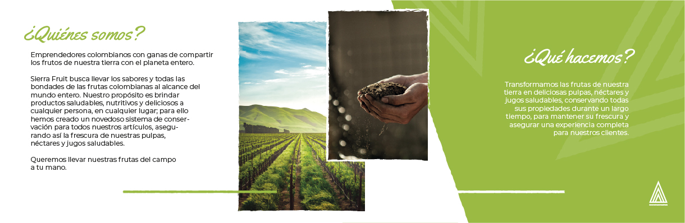

Sierra Fruit es una compañía que exporta pulpas y néctares con frutas colombianas. Su objetivo es brindar los productos lo más frescos posibles, combinando un proceso artesanal de recolección y selección, con una fórmula única que conserva la fruta de manera prolongada.
La marca busca rescatar el capital humano que hace que los productos sea únicos. Líneas irregulares, fotografías con factores humanos y rurales. Colores vívidos, similares a las frutas.
Resaltar sus procesos, su capital humano y su frescura sin perder posición en el mercado global en las tendencias gráficas y de comunicación.
Figuras con bordes irregulares, tipografías cursivas casi hechas a mano, combinadas con otras simétricas y más minimalistas.
Para lograr entrar en un mercado que se vio globalizado gracias al internet era necesario estar dentro de las tendencias gráficas y darle su propio toque, con sus raíces e ideas.
Un triángulo con dos triángulos más en su parte interna componen el isotipo de Sierra
Fruit. Representan las tres cordilleras que atraviesan Colombia, las cuales generan la
enorme variedad de pisos térmicos, necesarios para brindar una gama considerablemente grande de
frutas y sabores.
Sus bordes irregulares afianzan el concepto de ser un producto artesanal que, junto al
minimalismo que impera, no deja de lado la modernidad.
El pensamiento colectivo trae consigo una mentalidad de crecimiento grupal, los procesos articulados son parte fundamental de Sierra Fruit, creer y apoyar al agricultor colombiano es uno de los pilares, sólo así se garantiza un producto de calidad, fresco y con un sello único.
El isotipo ascendente, con la punta en lo más alto, refleja esa intención de crecer en equipo.